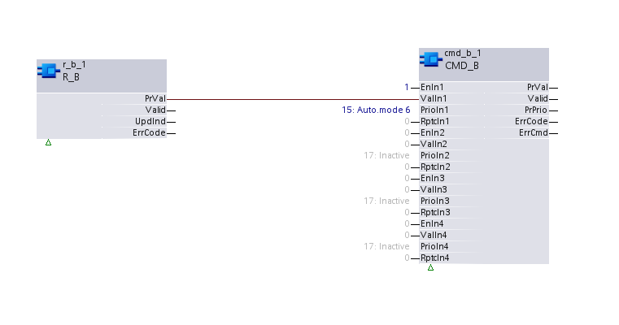
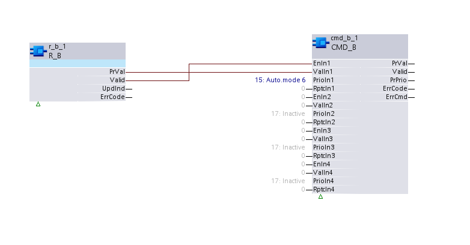

R_B：读取二进制
R_B 读取二进制数据点的当前值和附加指定属性。
Compatible data points:
- Binary input [BI]
- Binary output [BO]
- Binary calculated value [BCalcVal]
- Binary configuration value [BCnfVal]
- Binary process value [BPrcVal]
- Third party objects which contain the required properties.
参考data point objects有关 BACnet 数据点的详细说明。
Required properties:
- Present value
- State flag
Optional properties:
- Reliability
- Update count
Hardware interrupt
该XFB支持硬件中断（OB触发器），以立即响应特定事件，例如手动开关灯。如果在分配给 OB40 或 OB41 的图表中应用 XFB，则在来自 I/O 模块的中断信号上自动发生 OB 触发。
Pin description (inputs)
BaObjRef | |
|---|---|
BA-Object reference 结构 [BaObjRef] 定义 XFB 和 BACnet 对象之间的绑定连接。绑定会自动发生。 手动配置尝试是不必要的，并且可能会导致系统错误。 | |
DeviceId | 设备标识符 双字（默认值：16#3FFFFF） [DeviceId] 在单个标识符中包含对象类型和对象实例。 它用于识别设备对象：本地或远程。本地设备对象也可以通过值 16#3FFFFF 来标识。 |
ObjectId | 对象标识符 双字（默认值：16#3FFFFF） [ObjectId] 在单个标识符中包含对象类型和对象实例。 它用于识别设备内的对象。 |
ItemId | 物品标识符 整数（默认值：-1） [ItemId] 表示功能视图节点对象中的项目索引，它引用 BACnet 对象。 [ObjectId] 和 [ItemId] 一起定义对 BACnet 对象的间接访问引用。 值-1表示使用直接绑定。 |
Pin description (outputs)
PrVal |
|---|
Present value 布尔值（默认值：False） 引用的 BACnet 对象的当前值属性的值。 如果 [Valid] = False，[PrVal] 将提供最后一个有效值。 |
有效的 | |
|---|---|
Valid 布尔值（默认值：False） 输出引脚[PrVal]是否可靠的指示。 | |
1（正确） | [PrVal] 是可靠的。
AND
|
0（假） | [PrVal] 不可靠。
OR
|
UpdInd |
|---|
Update indication 布尔值（默认值：False） 指示当前值属性是否已新更新。 发生更新时，[UpdInd] 从 0 切换到 1 (True)，并在下一个周期（立即）返回到 0 (False)。如果没有连接到 [UpdInd] 的附加功能块（例如计数器功能块），则无法检测切换。仅当 [Valid] 为 True 时，[UpdInd] 才会设置为 True。 [UpdInd] 使用更新计数属性（如果存在）。这使得在新值与先前值相同的情况下可以将值识别为已更新。对于没有更新计数的对象，[UpdInd] 会切换到当前值的更改。 |
ErrCode | |
|---|---|
Error code indication 整数（默认值：20） 上次执行 XFB 读操作的状态。 | |
= 0 | 没有错误。 |
> 0 | 错误，请参阅XFB error codes. |
Use case examples
NOTICE

Note
图形反映了 XFB 实现的示例；有关 CFC 的当前示例，请参阅 ABT。
Simple use:使用当前值而不检查有效引脚。

Standard use:仅当 Valid 为 True 时才使用当前值。
